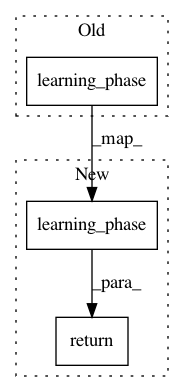

0ca37c9879ae36774ca508c7093c3840c37eb910,keras/backend/tensorflow_backend.py,,learning_phase,#,104
Before Change
// Returns
Learning phase (scalar integer tensor or Python integer).
lp = tf_keras_backend.learning_phase()
if isinstance(lp, tf_ops.Tensor) and lp.dtype.name == "bool":
return tf.cast(lp, "int32")
return lp
After Change
// Returns
Learning phase (scalar integer tensor or Python integer).
return tf_keras_backend.learning_phase()
@symbolic
def set_learning_phase(value):
In pattern: SUPERPATTERN
Frequency: 3
Non-data size: 3
Instances
Project Name: keras-team/keras
Commit Name: 0ca37c9879ae36774ca508c7093c3840c37eb910
Time: 2019-03-06
Author: francois.chollet@gmail.com
File Name: keras/backend/tensorflow_backend.py
Class Name:
Method Name: learning_phase
Project Name: keras-team/keras
Commit Name: 1dc67f374cde47a721e5fe5d9237bc2573bda2f0
Time: 2017-07-06
Author: souptc@gmail.com
File Name: keras/backend/cntk_backend.py
Class Name:
Method Name: in_test_phase
Project Name: keras-team/keras
Commit Name: c30223e510486179282b3480fc923dcb9863e3d2
Time: 2019-03-07
Author: francois.chollet@gmail.com
File Name: keras/backend/tensorflow_backend.py
Class Name:
Method Name: learning_phase